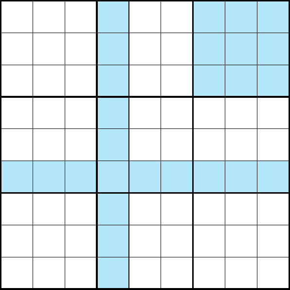

In every row, column and nonet the sum of the numbers have to be 45.
Every region (row, column and nonet) has to be filled with the numbers 1 to 9. In every region a number is only allowed once.
If 8 out of 9 cells in a region are filled , then the remaining cell contain a number that has not been used. Additionally, it is necessary to achieve the specific sum in a cage. Are all cells except one filled, the value of the empty cell has to be chosen to reach the sum.
If k cells in a region have exactly k possible values, then no other cell in that region can contain any of those values.
There are cages with only one possible combination. E. g. sum 3 with 1 and 2, sum 24 with 7, 8 and 9, ...